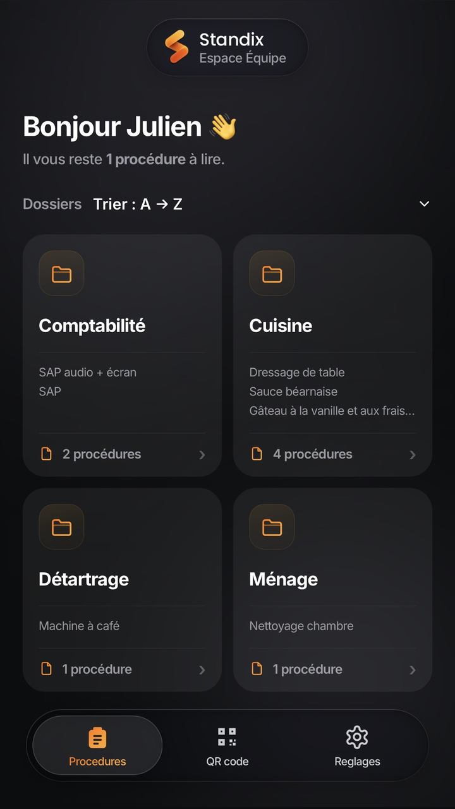
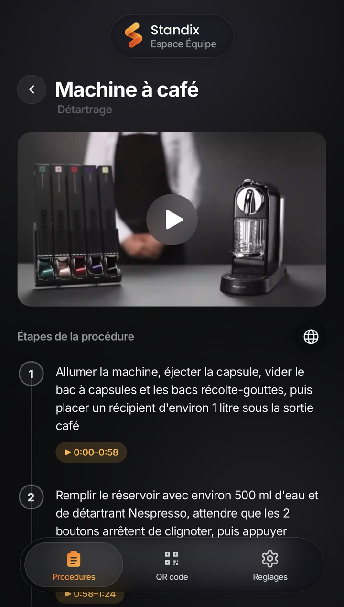
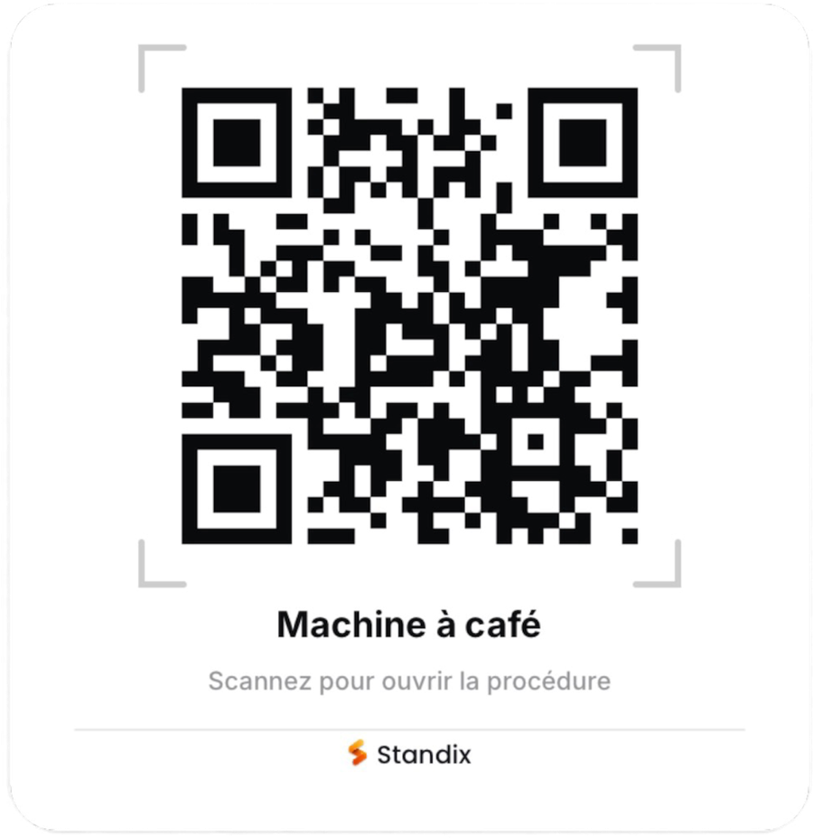
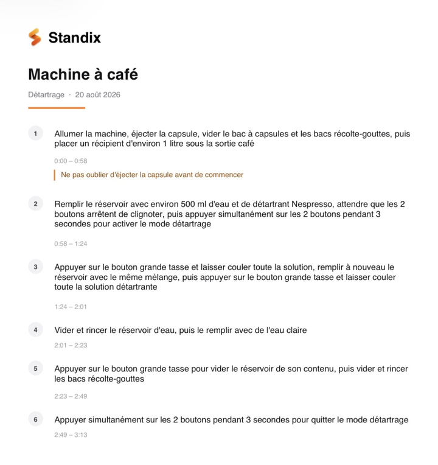

Le geste ou l'écran : l'IA découpe la vidéo et rédige les étapes. Un QR code sur place, et la procédure s'ouvre.
Toutes vos procédures


La preuve
Une procédure réelle, telle qu'elle sort de l'app. Rien n'a été réécrit.
Allumer la machine, éjecter la capsule, vider le bac à capsules et les bacs récolte-gouttes, puis placer un récipient d'environ 1 litre sous la sortie café
Ne pas oublier d'éjecter la capsule avant de commencer
Remplir le réservoir avec environ 500 ml d'eau et de détartrant Nespresso, attendre que les 2 boutons arrêtent de clignoter, puis appuyer simultanément sur les 2 boutons pendant 3 secondes pour activer le mode détartrage
Appuyer sur le bouton grande tasse et laisser couler toute la solution, remplir à nouveau le réservoir avec le même mélange, puis appuyer sur le bouton grande tasse et laisser couler toute la solution détartrante
Vider et rincer le réservoir d'eau, puis le remplir avec de l'eau claire
Appuyer sur le bouton grande tasse pour vider le réservoir de son contenu, puis vider et rincer les bacs récolte-gouttes
Appuyer simultanément sur les 2 boutons pendant 3 secondes pour quitter le mode détartrage
Vous relisez avant de publier. Corriger un mot prend cinq secondes. Écrire la procédure de zéro en prend vingt minutes.
Quand vous n'êtes pas là
Aujourd'hui
Premier chantier. Il attaque la salle de bain et prend le détartrant pour la paroi de douche. La paroi est en pierre naturelle. Il s'en aperçoit quand la surface devient mate — et vous, quand le client appelle.
Avec Standix
Il prend le même bidon. Un QR code est collé dessus. Il scanne : « Jamais sur pierre naturelle — savon noir dilué », et la vidéo du geste. Trente secondes. La paroi est intacte, et votre téléphone n'a pas sonné.
Sur place
On scanne le code, la bonne procédure s'ouvre — pas de liste à parcourir, pas de nom à retenir. Et quand il faut du papier, chaque procédure s'exporte en PDF.

Machine à café

Le code à afficher au poste · la fiche à imprimer
Chaque membre a son compte, créé une fois à son arrivée avec le code de l'entreprise. Vos procédures ne sont jamais publiques.
Pour qui
Quand quelqu'un s'en va, son savoir-faire s'en va avec lui. Standix le retient, dans tous les métiers où l'on apprend en regardant faire — à la main comme à l'écran :
Sur le terrain
Devant un écran
Sur le terrain, on filme le geste. Au bureau, on enregistre l'écran. Dans les deux cas, l'IA en fait une procédure que l'équipe ouvre sur son téléphone.
Le prix
Toutes les offres donnent accès aux mêmes fonctionnalités, sans exception. Seule la taille de l'équipe change le prix.
Essentiel
69 €par mois, hors taxes
Soit 13,80 € par personne et par mois.
ou 55 € par mois en payant à l'année
Essayer gratuitementPrix hors taxes. Vous changez d'offre quand l'équipe change, jamais avant. Les analyses vidéo se renouvellent chaque mois et ne se reportent pas.
Celle que vous expliquez le plus souvent.
Sans carte bancaire · Résiliable en un clic